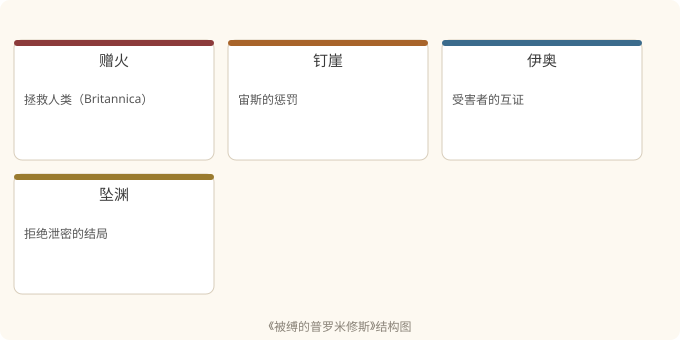

被缚的普罗米修斯
一、基本信息
| 作者 | 埃斯库罗斯 |
|---|---|
| 成书/出版 | 创作年代不确定（Britannica：the dating of which is uncertain） Prometheus Bound (play by Aeschylus) — Encyclopaedia Britannica（百科全书） |
| 国别/地区 | 古希腊 |
| 时代 | 古代 · 古典时代 |
| 体裁 | 悲剧 |
| 语言 | 古希腊语 |

《被缚的普罗米修斯》结构图（主题·结构图）
二、创作背景
Britannica：普罗米修斯'has saved humanity with his gift of fire'（以火赠人类）；'For this act Zeus has ordered that he be chained to a remote crag'（因此被缚于荒崖——Britannica）。
作者归属：Britannica 页面问答提出'Why is the authorship of Prometheus Bound debated by scholars?'（B234）。
三、内容脉络
权势与暴力神将普罗米修斯钉上高加索悬崖——赫菲斯托斯执行（通说）。
来客：俄刻阿诺斯、俄刻阿尼得斯歌队、伊奥、赫尔墨斯（Britannica：visited by Oceanus, a chorus of Oceanus's daughters, Io, and Hermes）。
结尾：普罗米修斯拒泄预言、与赫尔墨斯对峙坠入深渊（通说待核）。
四、主要人物表
| 人物 | 身份 | 说明 |
|---|---|---|
| 普罗米修斯 | 提坦神 | 人类的恩人（Britannica） |
| 宙斯（僭主） | 新王 | 压迫者（Britannica 语境） |
| 伊奥 | 受宙斯迫害者 | 受害者互证（通说） |
五、主题与艺术特点
- 反抗僭主的正义（通说）。
- 知识即痛苦的预言（通说待核）。
- 技术文明的恩人神话（通说）。
六、影响与评论
- Britannica：希腊悲剧中被缚赠火者的经典舞台（B235 语境）。
Prometheus Bound (play by Aeschylus) — Encyclopaedia Britannica（百科全书） - 浪漫主义以降的'普罗米修斯'再造（雪莱《解放了的普罗米修斯》——通说待核）。
Prometheus Bound (play by Aeschylus) — Encyclopaedia Britannica（百科全书）
七、阅读建议
难点
- 古希腊神系谱。
- 作者归属争论——阅读时以'埃斯库罗斯名下'看待。
- 《罗念生全集》悲剧卷（上海人民出版社，通说待核）。
- 英文译本（公有领域）。
可与《约伯记》对读（Britannica 曾以之相比——通说待核）。
八、待核实
- 作者归属争论的主流观点核对。
- 三部曲散佚（被释的普罗米修斯说）待核。
- 上演年代（前460年代说）待核。